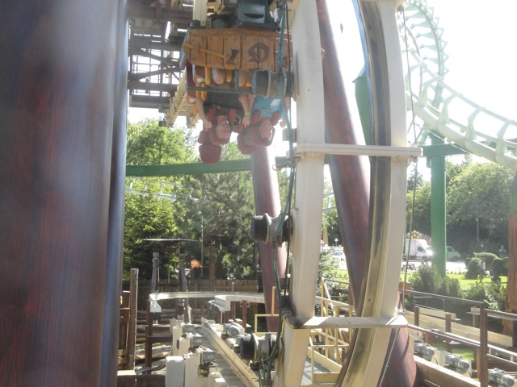
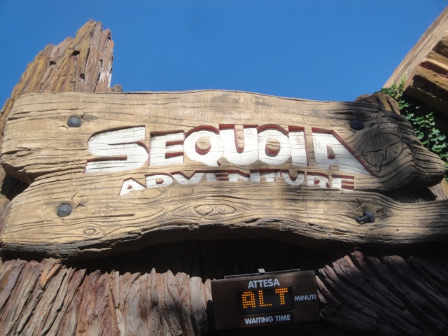

| |
Sequoia Adventure Review

We're here at Gardaland. Today's ride we'll be reviewing for you is Sequoia Adventure. One of the weirdest, strangest, most unique, most pointless, dumbest coasters on the planet. No really, I might just put this on my Top 10 Most F*cked Up Coasters List when I make it. For you see, Sequoia Adventure is an S&S Screaming Squirrel. A bizarre little contraction that has no other purpose than going upsidedown, and only one other Screamin Squirrel was built in China. Then another sort of weird Screamin Squirrel-like ride was built in Russia, and that turned out to be the prototype for the S&S El Loco, which has proved to be an awesome type of ride as it's demonstrated multiple times. But while those are awesome rides, we're here to review Sequoia Adventure, the Screaming Squirel. *groan* Let's just get this ride over with. We get in the cars, pull down the lap bar and the OTSRs, and we're off. We go around this really awkward turn since this is one of those rides that technically can't do any laterals, kind of like one of those Japanese Ultra Twisters (I'm REALLY hoping to get on one of those soon). But thanks to this really weird side track, it can make the necessary turn. And it feels weird. Kind of like the turnaround on Perilous Plunge. Except where that led us to an awesome drop with ejector air, this just leads us to the lifthill of a strange and stupid roller coaster. Anyways, we go up the lifthill, get a good view of Gardaland and Lake Garda and go down this straight track that just seems to lead to nowhere. It just dissapers. It's actually a really cool look. We just get closer and closer to the edge until...STOP!!! Uh...hi. Why the hell are we stuck here? Is the ride broken? There's no cars down below. We aren't stopped because of a block brake. What the hell are we just stopped at an awkward 45 degree angle for!!! Well, we move on and flip. Congratulations. We are now upsidedown. So yeah, there's not any real reason for us being upside down. We just sort of are. And then we flip back to being rightside up. Now, a lot of people complain that this part of the ride is painful. I personally never found that to be the case. So unless boredom and frustration from stupid pointlessness is considered painful, then no. This is not a painful ride. Anyways, we stop. Inch along, ready to flip again and...GOD DAMN IT!!! STOP STOPPING US RIGHT HERE!!! Ugh, you're wasting my already wasted time. Well, we flip upsidedown. I would warn everyone to not leave stuff in their pockets on this ride. But I have a better idea. How about you just keep your stuff in a zippered pocket. You see, while stuff can fall out of a normal pocket and this is a prime example of a ride that'll shake you down. A zippered pocket has teeth that prevents the pocket from opening up, and keeping the conents inside secure, regardless of whether you're flipping around, on a vertical lift, or even just being upsidedown on this peice of sh*t, zippered pockets will keep your stuff secure. You can cry and scream about saftey all you want (you can even go ape-sh*t and just completely LOSE IT over this like a certain park recently did), but that still doesn't change the fact that your stuff will be secure in a zippered pocket and any park that tells you otherwise is full of sh*t. So please buy Zippered Pockets today. Oh wait, I just went off on a tangent. Sorry, I've always been passionate on this topic and I've been ESPECIALLY fiery about it recently thanks to the INSANE actions of that certain park. Anyways, let's get back to the coaster, even though it's really not that interesting. We're upsidedown, and I mean just CRAWLING. WHY ARE WE GOING SO SLOW!!!? We start to un-flip and...STOP!!! NO!!! NOT AGAIN!!! Well, it doesn't last long and we even go over a little bump. Hey, that'll spice this up. And for once, we don't stop. We just flip upsidedown. HOORAY!!! And of course, we do nothing while upsidedown other than crawling at a snail pace. I swear to god, this was a coaster designed around being like Upsidedown Girl from Recess. And sure enough, we flip back. We're rightside up, on the ground, and the ride is over. Just go around another awkward turn and through some straight track. So, would I recommend this ride? Uh...as much as it may sound strange considering all that I've said, Yes. I know that sounds weird after all the bad things I've said about this ride. It's stupid. It's pointless. But despite all that, one thing still hasn't changed. It's unique. There really aren't any coasters like it (aside from that clone in China). And it may be sh*t, but I am a sucker for rare and unique rides. I just have to ride them. And I will grant the ride this as well. I really hope some other ride uses the flip as part of a much bigger experience as ling as they don't stop it like they do here. It's a cool element that I could really see put to creative use on a more complete ride. But hey, we have El Locos, and I'm happy with those. Granted, I won't ride it again when I come back (unless I'm with a friend who needs to ride it). But I'm still glad I rode it. However, if you don't care about counting credits, nor do you care that you'll be getting a unique experience, then I would definetly recommend you stay off this ride.
3/10
Location: Gardaland
Opened: 2005
Built by: S&S Power
Last Ridden: June 22, 2012
Sequoia Adventure Photos



|